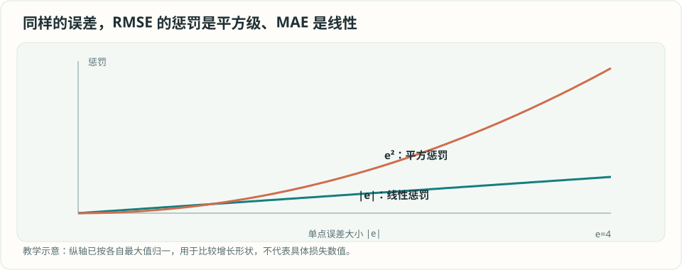

CHAPTER 14 / 28 · FORECASTING
预测与评估：从条件期望到前向回测
预测的产出不是一个数字，而是一个分布。本章讲清条件期望为何是最小均方误差预测、多步递推如何把未来创新取零、预测区间为何收敛或发散，以及怎样用滚动起点回测诚实地评估。
诊断通过只说明模型与假设不矛盾，真正的问题始终是：它能不能预测未来，以及预测有多不确定。这一章把预测拆成点预测、区间与评估三件事，并强调评估必须模拟真实的时间顺序。
先纠正一个误解：“样本内拟合好”几乎不能说明预测能力。阶数越高越能贴合历史，却更容易在未见数据上失效。判断标准只有一个：在最接近部署方式的前向评估中，它是否不劣于朴素基准。
01 · 条件期望与最小均方误差
在时刻 T 拥有信息集 ℐ_T（过去观测与由此估计的创新），对未来 y_{T+h} 的点预测取条件期望。在平方损失下，条件期望恰好是最小均方误差预测——这是它的定义性质，而非某种近似。
这一步把“预测”从工程问题变成概率问题：我们不是在猜一个隐藏的数字，而是在给定信息下求一个条件分布的均值。
02 · 多步预测的递推
一步预测中，等式右边的历史观测与估计创新都是已知的，可直接计算。两步及以后，未知的未来观测用其预测值代入，未来创新取条件期望为零（因为模型假设创新不可预测且均值为零）。MA 的作用在 q 步后耗尽，之后只剩 AR 反馈与常数项。
要点：“未来创新的条件期望为零”是模型假设下的结论，而不是说现实中冲击真的为零。若模型设定错误，这个假设也随之失效。
03 · 预测误差方差与区间
点预测只给了一半信息。在条件正态假设下，h 步的 95% 预测区间约为 ŷ_{T+h|T} ± 1.96·√Var(e_{T+h|T})。区间的关键差异在于是否含单位根。
√h 持续变宽。“区间变宽”不是模型变差，而是积分过程固有的不确定性累积。图为按解析误差方差绘制的教学示意。还要注意：报出的区间只反映模型内的创新不确定性，不包含参数估计误差与模型设定误差。真实覆盖率往往比名义值差，因此需要用滚动回测检验区间的校准。
04 · 评估指标
没有单一指标能概括“准不准”。选择指标要匹配业务损失，并注意各指标的分母与尺度问题。
| 指标 | 定义 | 特点与风险 |
|---|---|---|
| MAE | mean of |误差| | 单位与数据一致，易于解释；对大小误差等权 |
| RMSE | 误差平方均值的平方根 | 对大误差惩罚更重；量纲同数据 |
| MAPE | mean of |误差/实际值| | 无量纲便于比较；当实际值接近零时分母会爆炸 |
| MASE | MAE 除以朴素预测的 MAE | 与尺度无关；小于 1 才优于朴素基准 |

特别提醒：不要在含零值或间歇性需求的序列上用 MAPE——分母接近零时百分比误差会失去意义。这类情形宜用 MASE、MAE 或对尺度不敏感的指标。
05 · 滚动起点回测
前向回测（rolling-origin / backtesting）模拟真实部署：每次只用截止到当前的数据拟合，预测下一期，再滚动前进。这样得到的误差分布才接近部署时能遇到的情形。
回测时需要固定几件事：预测起点如何选、窗口是滑动还是扩张、是否在每轮重新估计参数、以及只评估排除了多少热身期。含糊不清的回测结果无法复现，也无法与别的方法公平比较。
06 · 局限与组合预测
- 结构突变：如果生成过程在预测期内改变（政策调整、需求模式切换），基于历史关系的模型会失效，且残差诊断事前很难发现。
- 远步长本质不确定：区间变宽是信息限制，不是模型缺陷；“截得很窄的区间”往往是过度自信而非精准。
- 组合往往更稳健：多个模型取加权平均（ensemble）通常比单一模型稳定，这也是预测竞赛中组合方案的常见表现。
这些局限的共同含义是：预测应带着区间和不确定性一起交付，而不是只给一条曲线。
07 · Python：滚动一步回测
下面用真实的 ARMA(1,1) 生成序列，从第 200 期开始做滚动一步预测，并与朴素预测（上一期值）比较。只依赖 numpy 与 statsmodels。
import numpy as np
from statsmodels.tsa.arima.model import ARIMA
rng = np.random.default_rng(14)
n, phi, theta = 300, 0.7, 0.3
e = rng.standard_normal(n)
y = np.zeros(n)
for t in range(1, n):
y[t] = phi * y[t-1] + e[t] + theta * e[t-1]
train_size = 200
preds = []
for i in range(train_size, n): # 每轮只用 y[:i]
fit = ARIMA(y[:i], order=(1, 0, 1), trend="c").fit()
preds.append(fit.forecast(steps=1)[0])
preds = np.array(preds)
actual = y[train_size:]
mae = np.mean(np.abs(actual - preds))
rmse = np.sqrt(np.mean((actual - preds) ** 2))
naive = y[train_size-1:-1] # 上一期值
mase = mae / np.mean(np.abs(actual - naive))
print("MAE %.3f RMSE %.3f MASE %.3f" % (mae, rmse, mase))
assert len(preds) == len(actual) == 100在本例中 MASE 略小于 1，说明模型不劣于朴素基准，但优势很小。这只是一个合成样本上的结果，不应当作真实数据的绩效承诺；真实项目应同时报告多个起点、多步长与基准方法。
08 · 与波动率建模的衔接
到目前为止我们都假设创新方差 σ² 恒定。但在金融收益等序列中，方差会成簇变化：大波动后跟随大波动。这意味着条件方差时刻在变，固定区间的假设不再成立。下一章的 ARCH / GARCH 正是为这种“方差时变”而设计。
进一步阅读与技术核对
引用指向预测定义、指标与接口的官方资料。